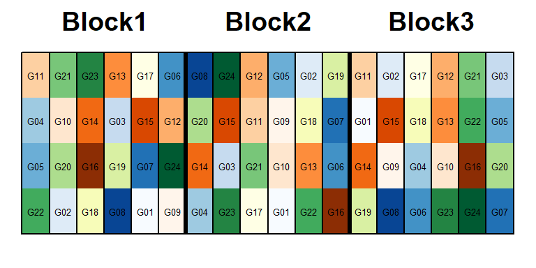
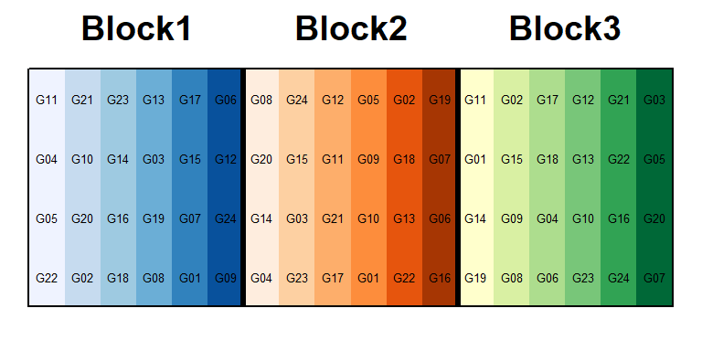
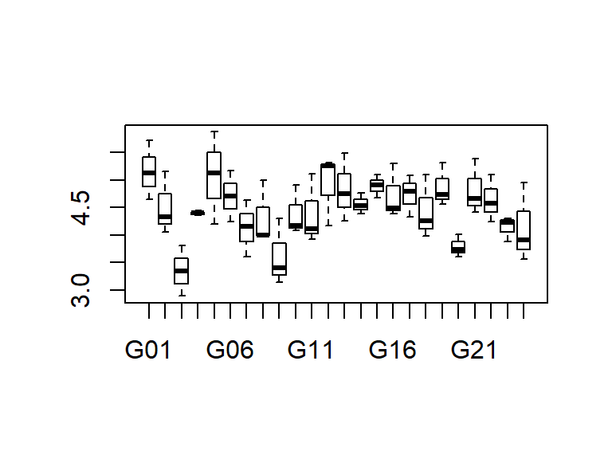
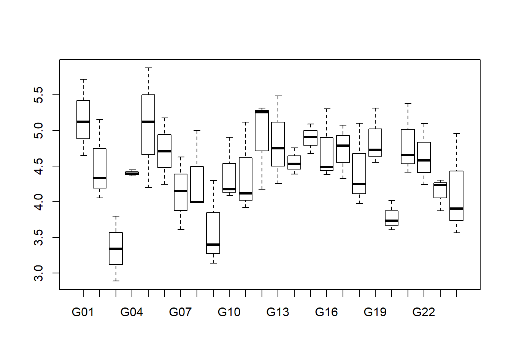
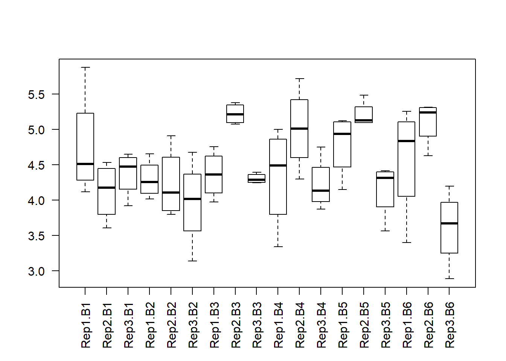
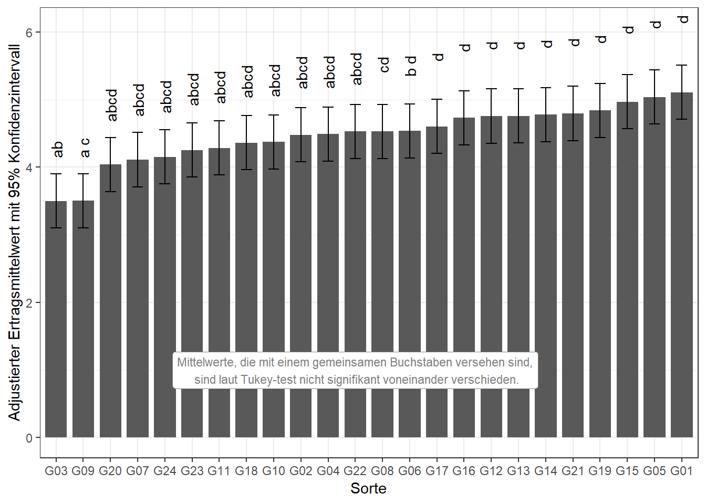

library(data.table) # bessere Datenmanipulation
library(ggplot2); library(ggfortify) # bessere Plots
library(emmeans) # adjustierte Mittelwerte
library(lme4); library(lmerTest) # gemischtes ModellDieses Beispiel ist den Beispielen “1wayANOVA_crd” und vor allem “1wayANOVA_rcbd” sehr ähnlich und baut darauf auf. Tatsächlich handelt es sich um den gleichen Datensatz wie in “1wayANOVA_rcbd”. Es ist ein Beispieldatensatz mit dem Namen john.alpha aus dem agridat package.
Dieses Experiment wurde als ein \(\alpha\)-lattice angelegt. Dies wurde im letzten Beispiel verschwiegen und stattdessen behauptet, es wäre eine randomisierte vollständige Blockanlage. In der Tat besitzt das eigentliche Experiment dieselben vollständigen Blöcke, allerdings gibt es innerhalb dieser noch jeweils 6 unvollständige Blöcke. Die ‘rep’ Spalte steht also weiterhin für die vollständigen Blöcke, zusätzlich gibt es jedoch noch eine ‘inc.block’ (incomplete block) Spalte für die unvollständigen Blöcke.

head(alpha)## gen rep inc.block yield
## 1: G11 R1 B1 4.1172
## 2: G04 R1 B1 4.4461
## 3: G05 R1 B1 5.8757
## 4: G22 R1 B1 4.5784
## 5: G21 R1 B2 4.6540
## 6: G10 R1 B2 4.1736tail(alpha)## gen rep inc.block yield
## 1: G16 R3 B5 4.3852
## 2: G24 R3 B5 3.5655
## 3: G03 R3 B6 2.8873
## 4: G05 R3 B6 4.1972
## 5: G20 R3 B6 3.7349
## 6: G07 R3 B6 3.6096Erst wollen wir ein Gefühl für den Datensatz bekommen und betrachten einige Kennzahlen zu den Daten, sowie zwei Plots. Im Vergleich zu den vorangegangenen ‘1wayANOVA’ Beispielen erstellen wir diesmal auch einen komplexeren Boxplot via boxplot() für die unvollständigem Blöcke.
head(alpha[order(gen)])## gen rep inc.block yield
## 1: G01 R1 B5 5.1202
## 2: G01 R2 B4 5.7161
## 3: G01 R3 B1 4.6512
## 4: G02 R1 B2 4.3350
## 5: G02 R2 B5 5.1566
## 6: G02 R3 B2 4.0510plot(y=alpha$yield, x=alpha$gen)
summary(alpha)## gen rep inc.block yield
## G01 : 3 R1:24 B1:12 Min. :2.887
## G02 : 3 R2:24 B2:12 1st Qu.:4.110
## G03 : 3 R3:24 B3:12 Median :4.404
## G04 : 3 B4:12 Mean :4.480
## G05 : 3 B5:12 3rd Qu.:4.968
## G06 : 3 B6:12 Max. :5.876
## (Other):54plot(y=alpha$yield, x=alpha$rep)
boxplot(yield ~ rep + inc.block, data=alpha, las=2) #las=2 dreht Achsenbeschriftung
Wir können uns nun entschließen die Daten mittels eines Modells zu analysieren. Der Ertrag ist unsere metrische Zielvariable. ‘Sorte’ ist ein qualitativer Faktor. Außerdem haben wir den qualitativen Faktor ‘rep’ im Modell. Im Gegensatz zu den vorangegangenen 1wayANOVA Beispielen müssen wir diesmal auch Effekte für die unvollständigen Blöcke modellieren. Diese sind ebenso qualitativ, sollten aber in diesem Fall als zufällige Effekte genommen werden. Somit haben wir gleichzeitig feste und zufällige Effekte im Modell und demnach ein gemischtes Modell. Die Funktion lm() ist nicht in der Lage gemischte Modelle anzupassen, sodass wir in diesem Beispiel zu lmer() aus dem lme4 package wechseln, welches immer zusammen mit dem lmerTest() package geladen werden sollte. Die Syntax ist dem von lm() recht ähnlich, mit dem Unterschied, dass zufällige Effekte generell wie folgt codiert werden:
mod <- lmer(yield ~ gen + rep + (1|rep:inc.block), data=alpha)Anmerkung: Es fällt auf, dass wir den zufälligen Effekt für die unvollständigen Blöcke zusammen mit ‘rep’ und getrennt durch einen Doppelpunkt geschrieben haben. Das liegt daran wie die ‘inc.block’ Spalte in diesem Datensatz angelegt wurde. Sie enthält lediglich die 6 verschiedenen Einträge B1-B6. Es gab allerdings in jedem vollständigem Block 6, also insgesamt 18 unvollständige Blöcke. Ähnlich wie bei dem Boxplot oben muss also die Kombination aus ‘rep’ und ‘inc.block’ angegeben werden um im Modell die korrekten 18 zufälligen Effekte für die unvollständigen Blöcke anzupassen. Als Alternative hätte man auch direkt B1-B18 in die ‘inc.block’ Spalte und demnach (1|inc.block) ins Modell schreiben können. Wäre dies nicht aufgefallen und man hätte also fälschlicherweise (1|inc.block) ins Modell geschrieben obwohl ‘inc.block’ nur B1-B6 enthält, so wären nur 6 Effekte modelliert worden. B1 z.B. wäre dann ein Effekt über alle drei der jeweils ersten Spalte von links in den drei vollständigen Blöcken. lmer würde keine Fehlermeldung ausgeben, sondern mit dem falschen Modell falsche Ergebnisse ausgeben.
Zunächst sollten nun die Residuenplots evaluiert werden, was bei einem lmer() Objekt nicht mit autoplot(mod), sondern beispielsweise mit plot(mod) und qqnorm(resid(mod)); qqline(resid(mod)) funktioniert. Erst danach ist eine Varianzanalyse zulässig.
anova(mod)## Type III Analysis of Variance Table with Satterthwaite's method
## Sum Sq Mean Sq NumDF DenDF F value Pr(>F)
## gen 10.6786 0.46429 23 34.736 5.4478 4.376e-06 ***
## rep 1.5703 0.78513 2 10.394 9.2124 0.004992 **
## ---
## Signif. codes: 0 '***' 0.001 '**' 0.01 '*' 0.05 '.' 0.1 ' ' 1Obwohl der Befehl anova(mod) exakt derselbe scheint wie in den vorangegangenen 1wayANOVA Beispielen, wird er nun durch das lmerTest package durchgeführt, sodass andere Berechnungen durchgeführt werden, die besser für Varianzanalysen von gemischten Modellen geeignet sind. Der F-Test für den Faktor ‘Sorte’ zeigt einen p-Wert < 0.05 und somit signifikante Unterschiede zwischen den Sorten. Demnach wissen wir nun, dass es mindestens einen signifikanten Unterschied zwischen den Sorten gibt, aber nicht zwischen welchen Sorten. Um dies herauszufinden ist es üblich multiple Mittelwertvergleiche durchzuführen (z.B. t-test oder Tukey-test).
Mit emmeans() erhalten wir in einem Zug sowowhl die adjustierten Mittelwerte für jede Sorte, als auch die Differenzen zwischen allen Sortenmittelwerten. Es ist sehr praktisch, dass das emmeans package nicht nur lm() Objekte, sondern auch lmer() Objekte, also gemischte Modelle, als Grundlage für die adjustierte Mittelwertschätzung verwenden kann. Auch die Buchstabendarstellung erhalten wir mit dem selben Code wie im letzten Beispiel.
means <- emmeans(mod, pairwise ~ gen, adjust="tukey")
means <- CLD(means$emmeans, details=TRUE, Letters=letters)
as.data.table(means$emmeans)[1:6,] # 6 der 24 Mittelwerte ## gen emmean SE df lower.CL upper.CL .group
## 1: G03 3.499200 0.1990122 44.32700 3.098200 3.900199 ab
## 2: G09 3.502181 0.1989050 44.28463 3.101387 3.902975 a c
## 3: G20 4.039985 0.1989050 44.28463 3.639191 4.440779 abcd
## 4: G07 4.111136 0.1990122 44.32700 3.710137 4.512135 abcd
## 5: G24 4.153874 0.1990122 44.32700 3.752875 4.554873 abcd
## 6: G23 4.252449 0.1989050 44.28463 3.851655 4.653243 abcdas.data.table(means$comparisons)[1:6,] # 6 der 276 Differenzen## contrast estimate SE df t.ratio p.value
## 1: G09 - G03 0.002981402 0.2738997 38.45149 0.01088501 1.0000000
## 2: G20 - G03 0.540785462 0.2623921 36.34639 2.06098244 0.9049638
## 3: G20 - G09 0.537804060 0.2739783 38.49400 1.96294378 0.9376900
## 4: G07 - G03 0.611936515 0.2615688 36.07237 2.33948615 0.7700973
## 5: G07 - G09 0.608955113 0.2740696 38.54725 2.22189988 0.8358363
## 6: G07 - G20 0.071151053 0.2634683 36.76920 0.27005548 1.0000000Erneut wollen wir die Ergebnisse abschließend in einem Balkendiagramm darstellen.
ggplot(data=means$emmeans, aes(x=reorder(gen, emmean))) +
geom_bar(aes(y=emmean), stat="identity", width=0.8) +
geom_errorbar(aes(ymin=lower.CL, ymax=upper.CL), width=0.4) +
geom_text(aes(y=(upper.CL)*1.1, label=.group, angle=90)) +
labs(y="Adjustierter Ertragsmittelwert ± 95% Konfidenzintervall", x="Sorte") +
theme_bw() +
annotate(geom="label", y=1, x=12, size=3, color="grey50", fill="white",
label="Mittelwerte, die mit einem gemeinsamen Buchstaben versehen sind,\n sind laut Tukey-test nicht signifikant voneinander verschieden.")